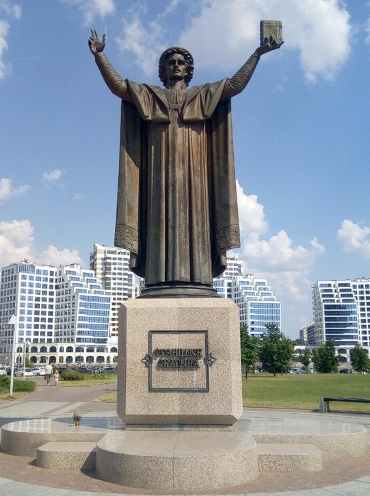
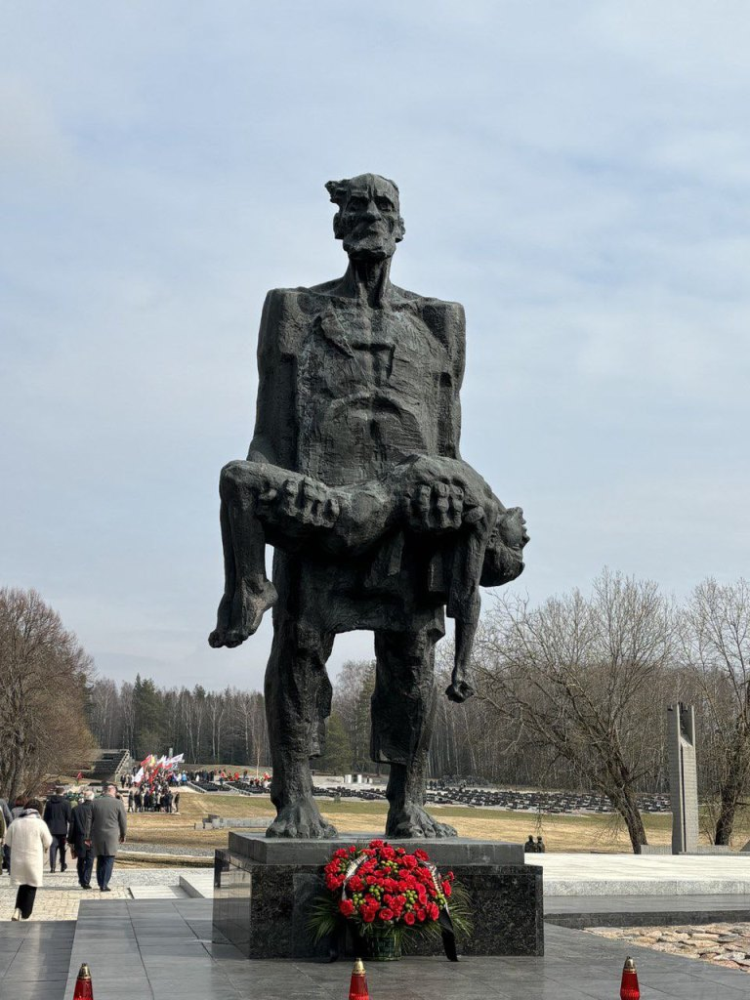

Памятник Франциску Скорине Бронзовый монумент первопечатнику и просветителю был установлен в 2006 году у здания Национальной библиотеки. Скорина, издавший в 1517 году первую книгу на старобелорусском языке, изображен с книгой в руках как символ знаний. Памятник гармонично сочетается с футуристическим «алмазом» библиотеки, объединяя историю и будущее. Это популярная точка для прогулок, встреч и памятных фото среди жителей и гостей столицы. Скульптура вдохновляет на учебу, саморазвитие и уважение к родному наследию.

Памятник букве «Ў» Уникальный памятник, открытый в 2003 году в древнем Полоцке, посвящен символу белорусской идентичности — букве «У нескладовае». Эта буква не встречается ни в одном другом алфавите мира, что делает монумент единственным в своем роде. Скульптура сделана в виде стелы со стилизованными буквами и выполняет роль солнечных часов. Памятник быстро стал трендовым объектом для туристов и любителей необычных достопримечательностей. Он напоминает о богатстве языка и самобытности национальной культуры.

Мемориальный комплекс «Хатынь» Трагический мемориал был открыт в 1969 году на месте деревни, сожженной вместе с жителями в 1943 году. Архитектура комплекса гениально проста: венцы срубов, колокола, звонящие каждые 30 секунд, и скульптура «Непокоренный человек». Это место увековечивает память о сотнях белоруских деревень, разделивших участь Хатыни. Место производит сильное впечатление, заставляя замереть и прочувствовать всю боль войны. Посещение «Хатыни» — важный шагом для сохранения памяти поколений.
